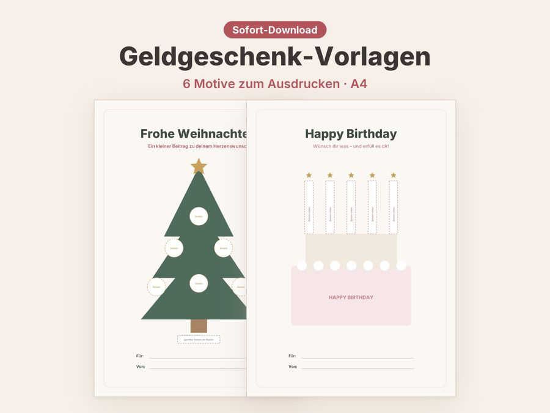
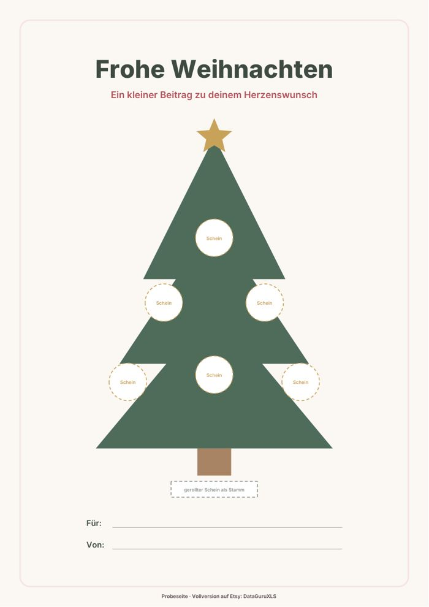

Geldgeschenk Vorlage kostenlos
Geld zu schenken ist praktisch, aber ein Umschlag wirkt schnell lieblos. Mit einer Vorlage, an der die Scheine wie Kugeln am Baum hängen, wird daraus ein Geschenk mit Gesicht. Die erste Seite bekommst du kostenlos.


Kostenlose Probeseite herunterladen
Motiv „Frohe Weihnachten“ mit Tannenbaum für Geldscheine (1 Seite, A4).
PDF herunterladen (kostenlos)So verpackst du Geld kreativ mit der Vorlage
Ein Geldgeschenk ist dann gelungen, wenn es zum Anlass passt und ein wenig Mühe zeigt. Mit der Vorlage brauchst du dafür weder Bastelerfahrung noch viel Material: Drucker, Papier, Schere und etwas Klebeband genügen.
So geht es
- Probeseite auf festerem Papier (ab 160 g/m²) in A4 und ohne Skalierung drucken.
- Die Felder „Für“ und „Von“ von Hand beschriften.
- Geldscheine falten oder rollen und an den gestrichelten Markierungen mit Washi-Tape, Klebepunkten oder Büroklammern befestigen.
- In einen Bilderrahmen stecken oder eingerollt mit einer Schleife verschenken.
Tipps für ein Geldgeschenk mit Wirkung
- Nenne den Zweck: „für den Urlaub“ oder „für die erste Wohnung“ macht das Geld persönlich.
- Verwende Scheine in unterschiedlichen Werten, dann sieht der Baum bunter aus.
- Nimm möglichst glatte Scheine. Bügeln mit niedriger Stufe zwischen zwei Tüchern hilft.
- Lege eine handgeschriebene Karte mit einem Satz dazu. Das bleibt in Erinnerung.
- Kleine Zusätze wie ein Schokotaler oder ein Zimtstern machen aus dem Motiv ein Mitbringsel.
Das Motiv lässt sich beliebig oft ausdrucken, praktisch also für Familie, Freunde und Kollegen. Teste zuerst die Probeseite mit einem Blatt Papier, schneide die Markierungen aus und prüfe, ob deine Scheine gut hineinpassen. So weißt du vor dem Verschenken, ob dir das Motiv gefällt.
Häufige Fragen
Wie viel Geld passt ans Motiv?
Das hängt vom Motiv ab. Am Tannenbaum hängen mehrere Scheine, bei der Geschenkbox oder dem Koffer passen größere Beträge als eine einzelne Schleife. Mit Büroklammern ist alles schnell ausgetauscht.
Wie befestige ich die Scheine, ohne sie zu beschädigen?
Washi-Tape und Klebepunkte lassen sich meist rückstandsfrei lösen. Klebe nie direkt auf den Schein, sondern fixiere ihn über eine gefaltete Papierlasche.
Darf ich die Probeseite weitergeben?
Die Datei ist für deinen privaten Gebrauch gedacht. Du kannst sie beliebig oft ausdrucken, aber bitte nicht weiterverkaufen oder an anderer Stelle zum Download anbieten.
Vollversion auf Etsy
Die Vollversion hat sechs Motive: Weihnachten, Geburtstag, Urlaubskasse, Hochzeit, Geschenkbox und Einzug, jeweils mit Feldern für „Für“ und „Von“.
Alle 6 Geldgeschenk-Motive auf Etsy ansehen